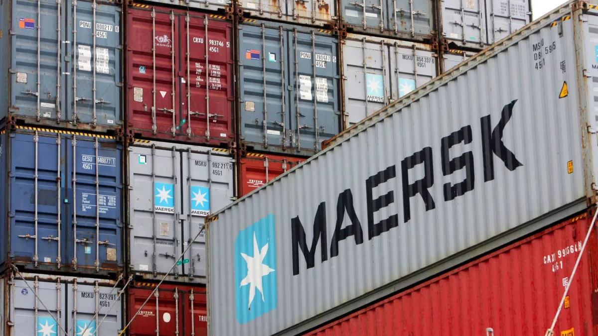
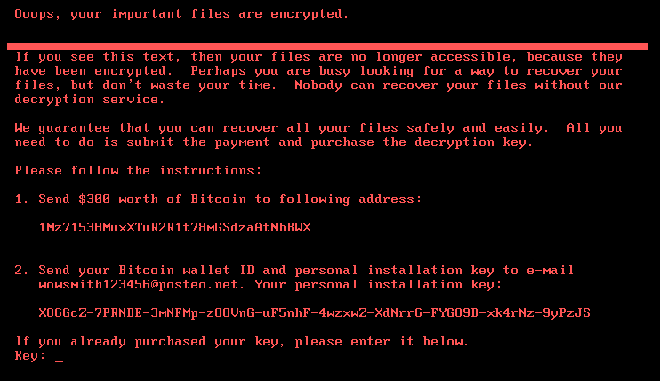
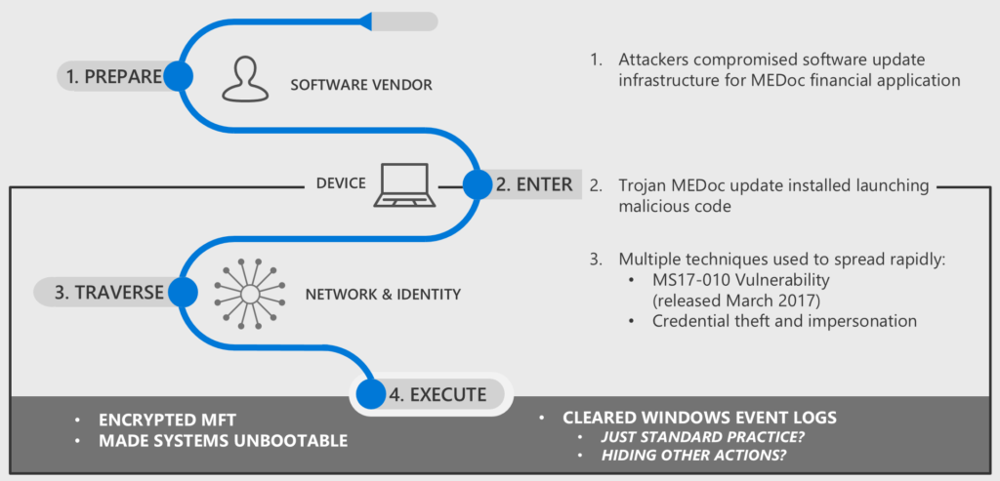

> CNO V - Seguridad Informática _
> Universidad Politécnica de San Luis Potosí _
> Octavo semestre _
Actividad 01 | Análisis de Ciberataque Real
En junio de 2017, un ransomware relacionado con Petya, denominado NotPetya por Kaspersky, comenzó a propagarse a nivel mundial, afectando a cerca de 2000 organizaciones, principalmente en Ucrania. Entre las más impactadas se encontró la empresa naviera Maersk, cuyos sistemas críticos fueron comprometidos, provocando la interrupción total de sus operaciones y generando graves consecuencias operativas y económicas.
El presente documento analiza de forma crítica el ataque de ransomware NotPetya que afectó a Maersk, evaluando las condiciones de ciberseguridad previas, los factores que facilitaron el incidente y su impacto, así como su relación con marcos normativos.

Figura 1: Maersk.
En 2017, el ciberataque NotPetya, originado en el contexto del conflicto geopolítico entre Rusia y Ucrania, provocó un impacto global sin precedentes al paralizar la logística y el transporte marítimo de la multinacional Maersk. Este desastre fue facilitado por una postura de ciberseguridad interna sumamente debilitada, donde destacaba el uso de sistemas operativos obsoletos y sin soporte, como servidores con Windows 2000, sumado a una nula segmentación de red.
El éxito del ataque se basó en una combinación crítica de fallas: técnicamente, el malware explotó la vulnerabilidad EternalBlue para propagarse velozmente; a nivel humano, la infección se activó en la filial ucraniana mediante el software fiscal comprometido M.E.Doc.
Antes del ataque, Ucrania ya se encontraba en un contexto de alta tensión geopolítica. En 2010, Viktor Yanukovych asumió la presidencia del país, pero tras la Revolución de Euromaidán en febrero de 2014 huyó de Ucrania. A nivel técnico, el escenario se agravó cuando en abril de 2017 el grupo Shadow Brokers filtró EternalBlue.
La preparación del ataque NotPetya ocurrió de forma silenciosa. Antes de junio de 2017, el software fiscal ucraniano M.E.Doc ya había sido comprometido mediante un backdoor. El ataque se ejecutó el 27 de junio de 2017 a las 10:30 UTC, cuando se liberó la actualización maliciosa. Entre 13:00 y 14:00 UTC, NotPetya alcanzó a A.P. Moller-Maersk a través de su oficina en Odesa.
Aproximadamente dos horas después del inicio del ataque, la empresa tomó la decisión crítica de desconectar completamente su red global. La fase de recuperación fue extensa; en aproximadamente 10 días, Maersk logró reconstruir desde cero cerca de 4,000 servidores y 45,000 PCs.
| Elemento | Descripción |
|---|---|
| Tipo de ataque | Malware destructivo (wiper) disfrazado de ransomware. Sobrescribe el MBR y cifra la MFT. |
| Actor | Sandworm (Grupo de hackers militares rusos vinculados al GRU). |
| Vector de entrada | Actualización de software comprometida del programa M.E.Doc. |
| Vulnerabilidad | CVE-2017-0144 (EternalBlue, SMBv1), Mimikatz (LSASS). |
| Etapas (MITRE) | Acceso Inicial (T1190), Ejecución (T1059), Persistencia (T1547), Escalada de Privilegios (T1134), Acceso a Credenciales (T1003), Movimiento Lateral (T1210), Impacto (T1486). |
| Sistemas afectados | Servidores Windows, 45,000 PCs, 1,200 aplicaciones críticas, terminales portuarias (17 de 76). |

Figura 2: Mensaje Rescate NotPetya.
| Principio | Descripción del impacto |
|---|---|
| Confidencialidad | No se expuso información sensible. El impacto fue mínimo, centrado en destrucción. |
| Integridad | Datos y sistemas irreversiblemente alterados. MFT corrompida y MBR sobrescrito. |
| Disponibilidad | Servicios interrumpidos globalmente. Operaciones manuales por 10 días. |
El incidente no fue una falla aislada, sino una cascada de fallos en controles preventivos.
| Riesgo | Control Faltante (ISO/NIST) | Recomendación |
|---|---|---|
| Cadena de Suministro | ISO 27001 A.15.1: Política con proveedores. | Entornos de prueba para updates. |
| Movimiento Lateral | NIST CSF PR.AC-5: Segmentación de red. | Micro-segmentación por riesgo. |
| Escalamiento Privilegios | ISO 27001 A.9.4: Gestión de acceso. | Implementar PAM. |
| Parcheo (SMBv1) | NIST CSF PR.IP-12: Gestión de vulnerabilidades. | SLAs de parcheo de emergencia. |
A continuación se presentan los recursos visuales que apoyan la comprensión del incidente.
Análisis documental del ataque NotPetya y sus consecuencias globales.
Esquema explicativo del funcionamiento del malware.

Figura 1: Diagrama de funcionamiento de NotPetya.
El ataque a Maersk demostró que debilidades técnicas como sistemas obsoletos (Windows 2000) y redes no segmentadas pueden escalar hasta un colapso sistémico global. Fallas críticas como la nula gestión de parches y el abuso de credenciales privilegiadas convirtieron una actualización de software en un vector de entrada masivo.
En México y Latinoamérica, ante presupuestos limitados, es urgente priorizar la actualización de sistemas bajo marcos internacionales como el NIST. El caso Maersk redefine la ciberseguridad como un pilar estratégico indispensable, y no un gasto.
El caso NotPetya-Maersk confirma que la ciberseguridad es vital para la continuidad operativa en un mundo interconectado. En América Latina, donde la brecha digital y el uso de sistemas desactualizados son retos comunes, la resiliencia no debe ser opcional.
Para fortalecer nuestra región, es imperativo implementar acciones como modernizar la infraestructura crítica y la gestión de parches; así como la segmentación y respaldos offline (regla 3-2-1). En definitiva, la estabilidad de las organizaciones depende de entender que la prevención y la resiliencia son determinantes.
La pérdida estimada ronda entre los $250 y $300 millones de USD. El costo técnico de recuperación ($1,714 MDP) triplicó lo que la empresa habría invertido en protección anual.
Descarga la versión formal del documento correspondiente a esta actividad (Respaldo Académico).
EXPORTAR A PDFArchivo: Act01-Equipo2.pdf